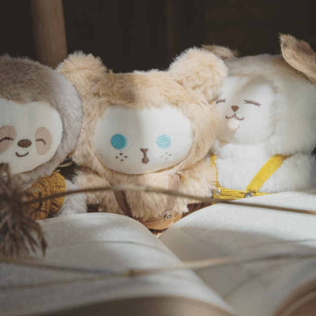

About
こんにちは。
zoopi(ズッピー )です。
私がぬいぐるみをつくり始めたきっかけは、
「キャラクター(ぬいぐるみ)は家族になれる」と気づいたからです。
3年半キャラクター雑貨のデザイナーとして働いていました。
そこで、たくさんの方がキャラクターを愛し
家族のように名前をつけてキャラクターのぬいぐるみを扱っていました。
私が家族としてぬいぐるみを見ていたのは物心ついたときで
ペンギンのぬいぐるみでした。
一緒にいると落ち着いて、どこに行くのも一緒でした。
家族に言えないことも、その子になら言えました。
大人になってその感覚を忘れてしまっていたけど、
たくさんの可愛いがられているぬいぐるみを見て、
「表情が変わらないぬいぐるみだからこそ、与えられる癒しがある」
と強く思いました。
ズッピー のコンセプトは「お気に入りの毛布のようなぬいぐるみ」です。
一緒にいると安心して、どこにでもある毛布なはずなのに
自分にはそれが特別で大好きなんです。
ぜひお迎えした後に、ご自身で名前をつけてもらいたいです。
あなたの特別でお気に入りな子にしてください。
それがぬいぐるみにとっても1番の幸せだと思います

sayaka takahashi
＊武蔵野美術大学テキスタイル専攻卒業
＊インテリア雑貨メーカーのデザイナーとして3年半勤務
＊フリーの作家として活動中
home